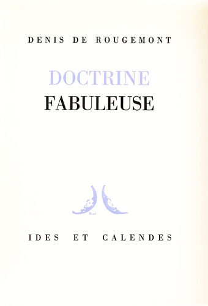

Doctrine fabuleuse
, Neuchâtel, Ides et Calendes, 1947.
Orientation
Premier dialogue sur la carte postale –
La pluie et le beau temps
Deuxième dialogue sur la carte postale –
La beauté physique
Troisième dialogue sur la carte postale –
L’homme sans ressemblance
Quatrième dialogue sur la carte postale –
Ars prophetica – ou – D’un langage qui ne veut pas être clair
Miroirs –
ou – Comment on perd Eurydice et soi-même
L’ombre perdue
L’énigme
Psychologie de Peter Schlemihl
Tentative d’interprétation
Suite et fin de la fable
Angérone
Tristesse platonicienne
Contribution à l’étude du coup de foudre
Don Juan
La gloire
Le nœud gordien renoué
Le supplice de Tantale
La fin du monde
Ontologie de la fin
La crise
Avertissement
Péripétie
Premier jugement, par la lumière
Second jugement ou sommation
Troisième jugement ou le pardon
L’eau – ou – L’esprit de la tempête
Antée – ou – La terre
Le feu

▲